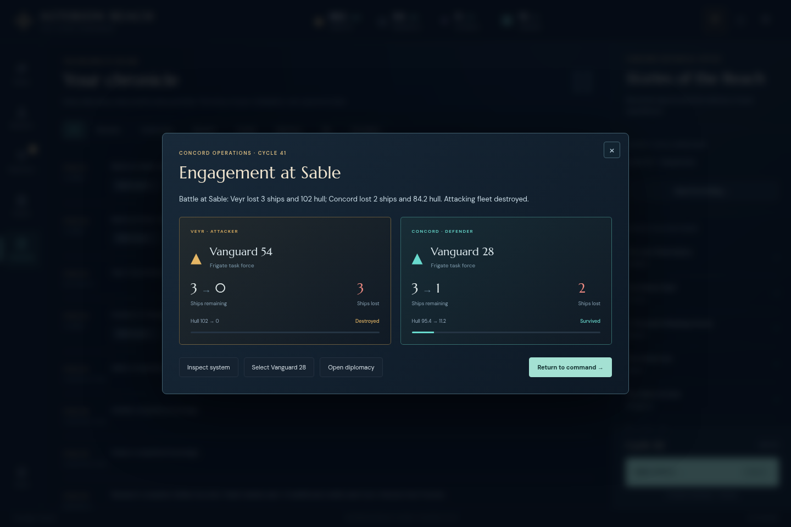
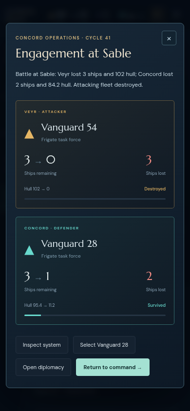
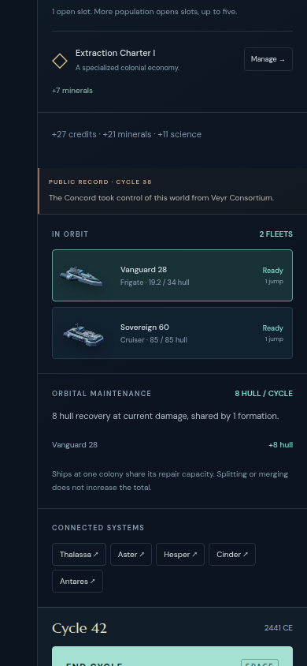

Small coherent update: name the selected formation before combat, show the ordered list of currently observed opposing formations, explain the current own defense order, and label reports as snapshots of the named participants. No combat changes, new save fields, casualty projections or aggregate odds claims.
Only the specified cycle42 checkpoint was examined. Sable report11 is stamped cycle41: Veyr Vanguard54 attacked Concord Vanguard28, each beginning with three frigates. The attacker was destroyed; the defender ended with one frigate and11.2 hull. At the cycle42 checkpoint Vanguard28 has19.2 hull after eight points of passive repair, and Sovereign60 has85 hull. The report proves only its two participants; the checkpoint cannot establish the cruiser's battle-time location.
The Chronicle Battle report button works with a correctly quoted numeric selector. No defect is attributed to report navigation. Snapshot, source hash and exact UI text.
Use only saved participants for names, classes, counts and hull. Add “Formation exchange” or “Participants in this exchange,” and make clear that hull values were recorded at battle end. The report must retain11.2 even though the current inspector shows19.2. Do not list current friendly ships as historical reserves, reinforcements or nonparticipants. Inspect system already provides an explicit route to current information.
Replace each generic triangle with a compact existing native hull portrait drawn from the saved type/owner. Use generic appearance: historical heritage styling was not recorded. Keep ship counts, attacker/defender labels and outcome dominant; no new image assets or dramatic battle animation are needed.
Multiple returned reports may be displayed in their actual supplied order, but old same-turn/system reports must not be retroactively grouped into one command without recorded grouping metadata.
getEngagementPreview(state,fleetId,targetId,factionId='player') returns null for a foreign/civilian/missing fleet, unknown destination, or nonadjacent remote destination. Otherwise it returns systemId, systemName, context, selected formation snapshot, observed, opponents (null if unknown), otherFriendly current formations and hostileColony. Formation snapshots contain only id/name/owner/type/ships/hp/maxHp. No hidden intelligence, live references or historical assertions.
getDefenseOrder(state,systemId,factionId='player') returns own formation snapshots in engine order, including civilians, or an empty list for an unknown system.
The approved implementation is isolated to combat-preview.js and its tests. Real ordinary-command tests compare projected target order with returned reports, including a contested four-round exchange followed by the next opponent, and a dead attacker leaving later opponents untouched. Additional coverage checks arrival with co-located friendly ships, observer privacy, loss of sensors, civilian defense order, neutral rejection and pure copied snapshots. Root owns UI/report integration.


